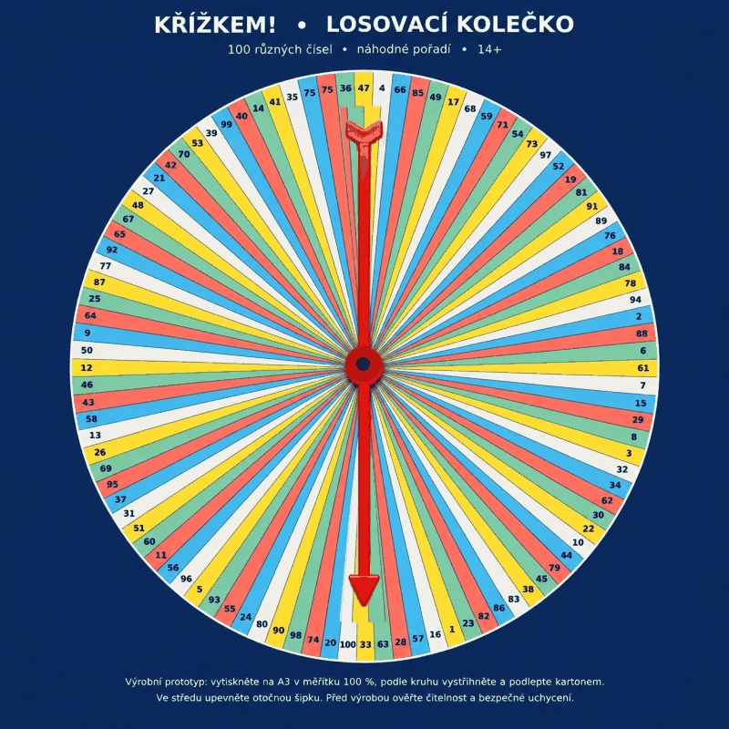

🎯 KŘÍŽKEM!
Roztoč kolečko třikrát. Pak najdi všechna 3 vylosovaná čísla na herním listu!

Připraveno na losování
???
⏱️ 0,00 s
Po jednom kliknutí proběhnou 3 automatická roztočení. Stopky se spustí po posledním losování.
🔎 Najdi 3 čísla
Nejprve roztoč kolečko.